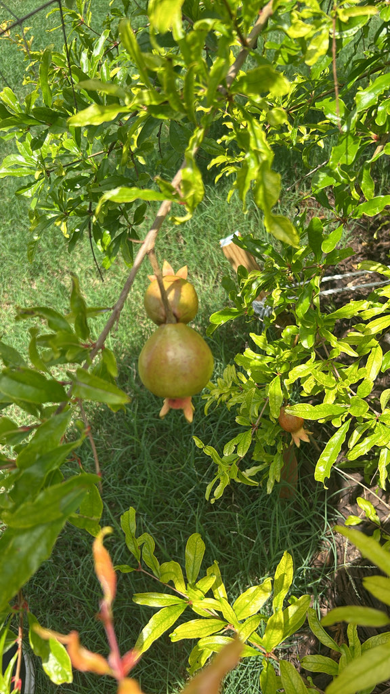

- The leathery red fruit is packed with hundreds of juicy seeds, each wrapped in its own jewel-like sac of edible pulp.
- It is one of the oldest cultivated fruits on Earth — grown and prized for more than 5,000 years.
- The many-seeded fruit has long been a symbol of abundance and fertility across cultures from Persia to the Mediterranean.
- The word "grenade" comes from the pomegranate — early grenades were named for the fruit they resembled, seeds and all.
Native to a region stretching from Iran (Persia) through northern India and into Central Asia. Cultivated since antiquity, it spread across the Mediterranean, the Middle East, and eventually the warm Americas. It grows well in Florida's warm climate, though it fruits best where summers are drier.
- The pomegranate is among the most ancient of cultivated fruits, with a history reaching back more than five thousand years across Persia, the Mediterranean, and South Asia. Its many seeds made it a near-universal symbol of abundance, fertility, and renewal, woven into mythology, art, and religious texts.
- Each fruit is a tidy piece of engineering. Inside the tough rind, hundreds of seeds are each surrounded by a translucent sac of tart-sweet juice called an aril — the part you actually eat — separated by bitter white membranes.
- There is a language footnote hiding in the fruit. The pomegranate's old French name, "pomme grenade" (seeded apple), gave us the word grenade for the seed-filled explosive it was thought to resemble.
The bright tubular flowers are rich in nectar and draw bees, butterflies, and occasionally hummingbirds. Ripe and split fruit feeds birds and small mammals. The dense, twiggy shrub also offers nesting and shelter cover.
A deciduous large shrub or small tree, often multi-trunked, with thin branches and sometimes thorny twigs. Expect it to drop its leaves completely in winter; fresh bronze-tinted growth pushes out again in early spring.
Showy, waxy, orange-red, trumpet-shaped blooms in late spring and summer.
Round, leathery-skinned, yellow-brown to deep red, crowned with the dried flower calyx; packed with seeds in juicy red arils.
Narrow, glossy, opposite, bronze-tinted when young, turning yellow before dropping. The plant is fully deciduous — a bare winter silhouette is completely normal and gives way to fresh new growth each spring.
A twiggy shrub with vivid orange-red flowers in summer and round, crown-tipped fruit later in the season. The little "crown" on top of the fruit is the giveaway.
Pomegranate is a common food — the juicy arils around each seed are eaten fresh or juiced, while the tart rind and membranes are not.
It isn't listed as toxic to dogs, though a dog that eats a large amount, especially the rind, may get a mild stomach upset.


- © Joanne Walker (CC-BY-NC), via iNaturalist
- © Maria Escobar (CC-BY-NC), via iNaturalist
- © Denise Sosa (CC-BY-NC), via iNaturalist
- © Harrison Mello (CC-BY-NC), via iNaturalist
- © David McSwain (CC-BY-NC), via iNaturalist